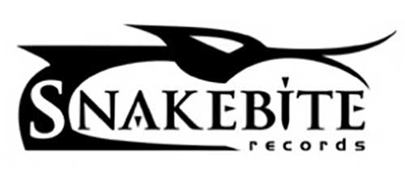

New Album out now!

With debut album ‘Emergence’ Dutch rockband ‘Mental Shift’ makes quite the appearance in the rock scene, hence the album title ‘Emergence’. Their sound is heavy but accessible. Recognisable melodies, heavy riffs and the ever changing voice of lead singer Daphne makes this a record you just keep on playing! Steady rock but also fragile songs all written straight from the heart. The meaningful narrative lyrics are sure to move you. Theme of the record is your own Mental Shift. The way you view the world you can control with your mind. Stay true to you, whether it’s love, friendship or a career. How does this all sound? Listen to our album and find out for yourself…
Mental Shift is a Rockband from the Netherlands! Their sound has been described as similar to Skunk Anansie, Kate Bush, Placebo, The Gathering and Within Temptation. While alternative in its core, the different musical backgrounds of the musicians result in a mix of influences from pop, metal and indie.
The songs are mostly mid tempo and are characterised by heavy riffs, high pitched vocals, accessible melodies with a solid base of drum and bass which leads to the very accessible, melodic, alternative rock of Mental Shift, sometimes rap or grunt.
Mental Shift shows are lively, theatrical and filled with humor. The band celebrated their second anniversary in September 2018. The band has accomplished a lot in their first years and builds on this foundation to expand their activities.
In summer 2018 their debut album ‘Emergence’ was recorded in the Netherlands at Rockinc. Recording and released on rock label ‘Snakebite Records’ in November 2018. The album was produced by most respected producer and musician Joss Mennen (Zinatra and Mennen).
Mental Shift hits the stage regularly. A repertoire of over 30+ self written songs has been build which allows the band to play up to an evening filling performance when required.
You can also listen to Mental Shift on any music streaming service worldwide like Spotify, TIDAL, 7Digital, Apple Music, Deezer, Google Play, Amazon etc.
Mental Shift is: Daphne: all lyrics, song melodies, ad libs, choirs, raps. Hans: all guitars, arrangements, song themes, riffs, Aad: all bass and Michiel: all drums.

Daphne started her singing career at an early age, joining The Academy Of Vocal Arts in The Hague at the age of 8. This intensive vocal training allowed her to develop her voice and a solid understanding of music and singing in general. In releasing several albums and performing throughout Europe her passion for singing was awakened.
Through her teens and twenties she enjoyed singing lessons in pop (Musical Academy Leiden) and classical singing (Het Phondament The Hague). She also took lessons with Floor Jansen (Nightwish) to develop a more powerful style and learn belting techniques. She has been writing songs and lyrics for over ten years which she performed in several bands. Very experienced in live gigs she performed dozens of times at festivals and pop stages.

Hans is playing the guitars in Mental Shift. He started playing classical guitar at the age of seven, inspired by the great Segovia, his father used to listen to. He taught Hans the basics of fingerpicking. Somewhat later, during highschool, Hans got inspired by Deep Purple’s Richie Blackmore, Jethro Tull’s Locomotive Breath, Uriah Heep’s Gipsy, Alice Cooper’s Billion Dollar Babies and Peter Frampton’s live guitar playing. Hans wanted to make such sounds too. He stopped classical guitar lessons and learned himself how to rock, by playing at least three hours a day. As a teenager he got his first 3 man band, creating their own rock songs and sound. Covering other ones songs just was not done these days. From that moment this band changed musical style, line up and had several band names every few years.
After 25 years of changes, ups and downs, lots of gigs though, Hans finally quitted the scene and ended up toggling an acoustic guitar and rediscovered the classical guitar for a bit, while raising kids and stuff. From 2010 Hans started up again, doing classical rock songs in several cover bands. Later on playing the modern blues-rock. He got inspired by guys like John Mayer and Joe Bonamassa. A challenge it was for sure, learned new guitar playing technics and he still likes playing this genre once in a while. But still it didn’t give him the ultimate satisfaction that he used to experience in his earlier days. Making new music, creating his own sounds on Daphne’s creations, that’s what really keeps him going.

Michiel started playing drums when he was 15 years old. He learned playing the drums mainly autodidact and attended one year of education in jazz-feel drumming to improve his techniques for playing the style of drumming he likes best. His first inspiration came from drummers like Ian Paice, John Bonham, Steve Copeland and John Cogholan from very successful bands at that time. More recent through the large numbers of drum clinic video’s on YouTube he keeps on developing his drum skills. Together with Hans, who plays lead guitar, he played in a band for twenty years long with the same bass player rock feel music. They arranged their own compositions for most of the years. In the third life of this band they had a period of covering rock music hits from various legendary bands from the seventies and eighties. Additional to their steady band formation of the three men they had different guitarists singers, background vocalists and keyboard players to join them.
In between this long period with the same band Michiel also played drums in various gospel bands, pop ensembles and musical orchestras. He likes to play different kinds of musical styles to enrich his musical experiences and skills. But the style he likes most is rock feel straight bold or massive symphonic.
He is playing his Japanese manufactured Yamaha drum kit over the last 25 years of his drumming career. An excellent kit completed with Latin percussion accessories, chimes and a large cymbal line- up of Zildjan K dark series. From crash to splash, ride, crash ride, china and of course the hi-hat set. Although not playing drums full time like a professional, it is by far his most favourite habit to do in life.
Playing in the band Mental Shift with their inspiring and overwhelming vocals of front woman Daphne is for him the ultimate experience in performing. He likes playing concerts and he is at his best on stage. Maybe sometimes so eager that he needs to be tamed, but never too much!
Under construction
For bookings, information, questions, contact us via Facebook, YouTube, Twitter, SoundCloud or follow us on Spotify.


Weert, Netherlands 
 Music Productions, Netherlands
Music Productions, Netherlands
 Eddy Creative Productions, Netherlands
Eddy Creative Productions, Netherlands
Guitar building, repair and maintenance, Netherlands
 Digital Music Distribution
Digital Music Distribution
 Platform voor Noord Nederlandse popmuziek!
Platform voor Noord Nederlandse popmuziek!
 Studio, Metslawier, Netherlands
Studio, Metslawier, Netherlands